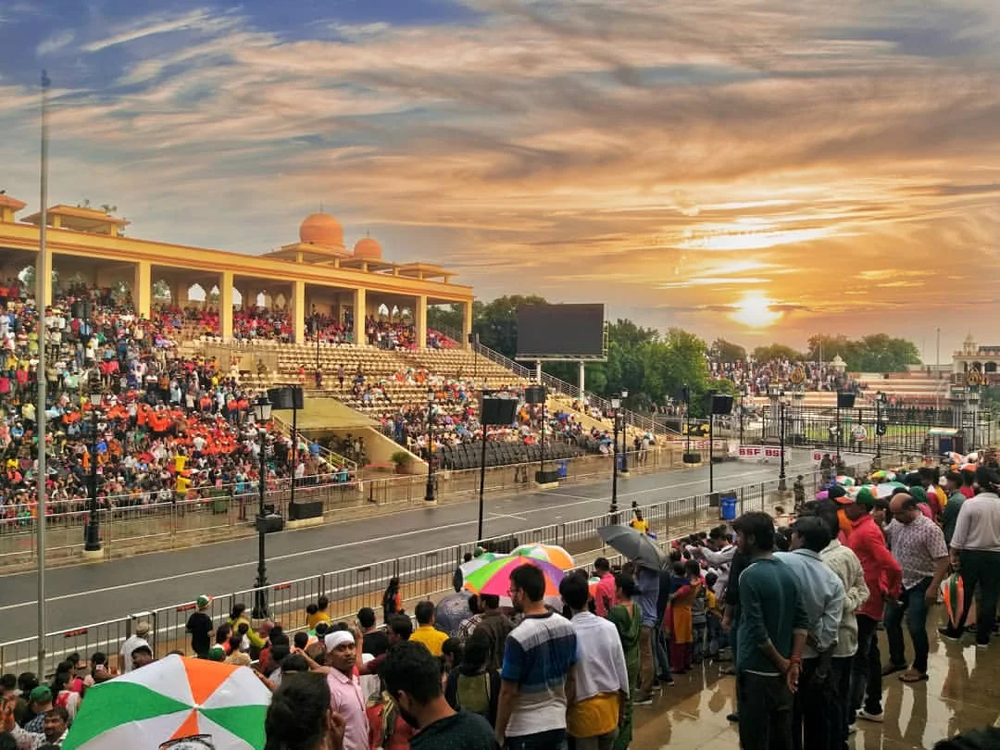

📍 Must Visit Places

Golden Temple
The spiritual and cultural center of Sikhism.

Wagah Border
Famous for its patriotic flag-lowering ceremony.

Anandpur Sahib
One of the five Takhts and a key Sikh pilgrimage site.